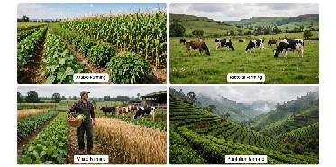

machines
tips
products
total
fertilizers
types
problems
THE BARKBONE OF OUR SOCIETY
TYPES OF FARMING
Orgarnic
Uses natual methods to grow crops and raie live stck.
Conventional
Uses mordern technology and synthetic fertizers to increase crop yields.
Sustainable
Focuses on longtem environmental sustainability and social responsibility.
Intensive
Uses large scale farming techiniques to maximise crop yields.
extensive
Uses large areas of land to raise live stock and grow crops.
Those are some of types used in our country
>
Chooe your fovorite type
Presented by "CRAJ NTULA .Ro0047"